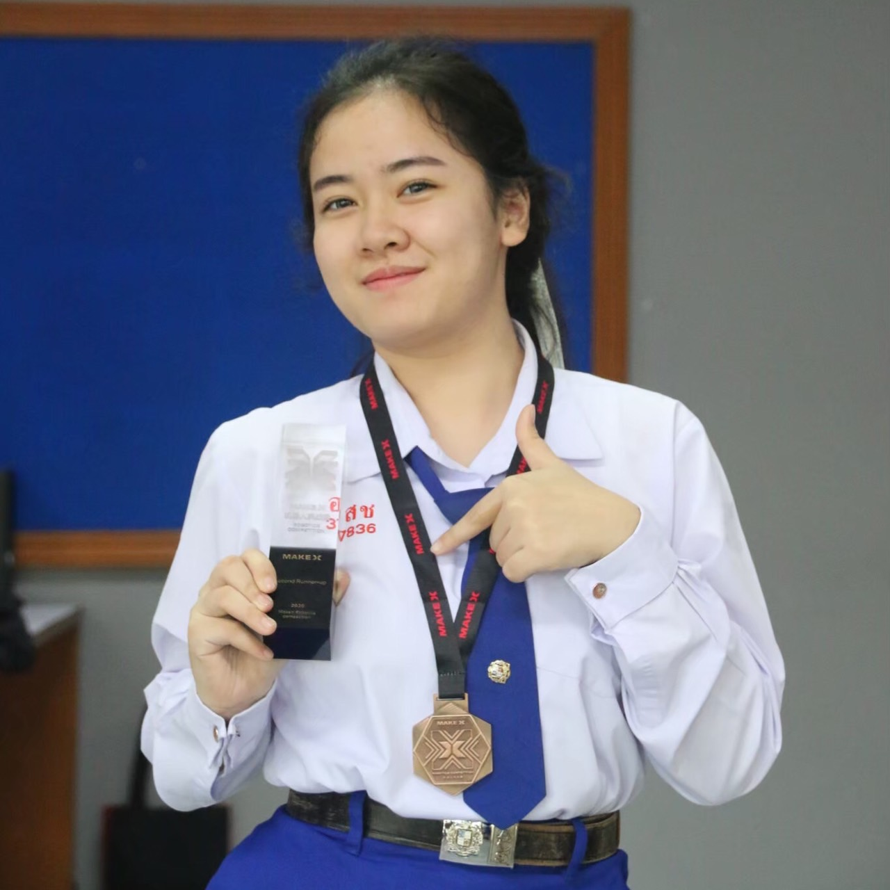
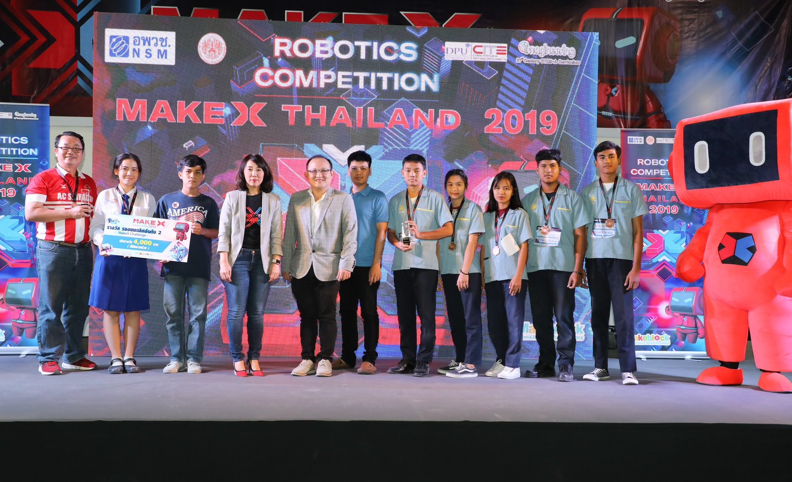
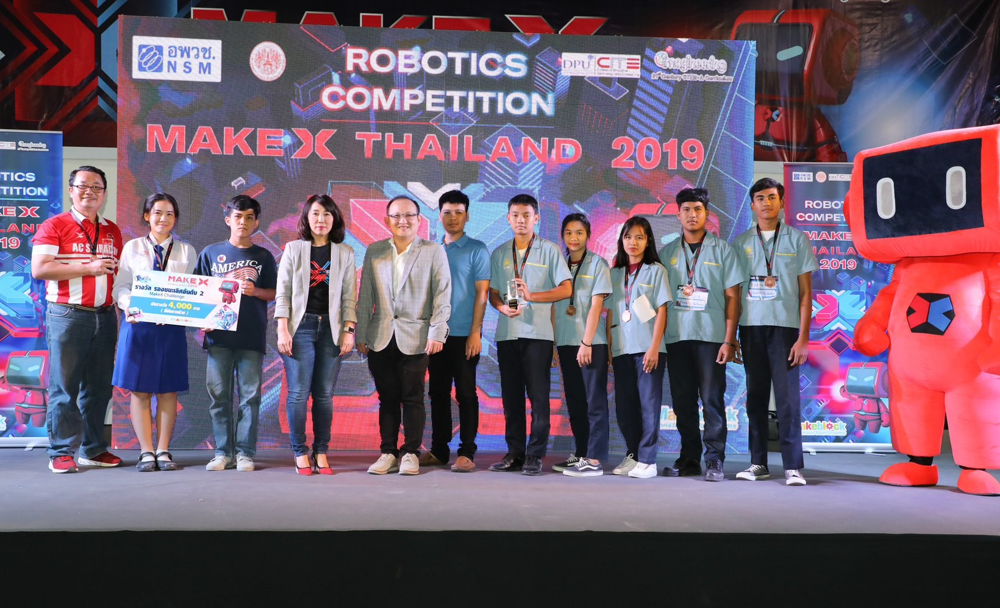
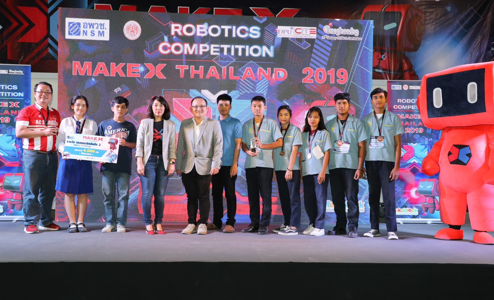

Medical Stethoscope with Heart Rate Sensor Project
Team Porject
Web using HTML, CSS,ReactJS, JSON, Firebase, Figma
Circuit using Hard Rate, Resistor,Capacitor, Microphone, Transistor, Battery

โปรเจคหูฟังแพทย์และฮาร์ทเรท แนวคิด ต้องการคิดค้นนวัตกรรมทางการแพทย์แบบพกพาได้ สามารถฟังเสียงหัวใจและบันทึกเสียงส่งไปให้แพทย์เพื่อวินิฉัยโรค(อาจทำเสียงปอดในอนาคต) ทั้งนี้จะมีเซนเซอร์ฮาร์ทเรทเพื่อวัดอัตราการเต้นหัวใจ โปรเจคนี้ดิฉันได้มีส่วนร่วมในการทำวงจรหูฟังแพทย์และบัดกรี โดยศึกษาหาวงจรไฟฟ้าและนำมาประยุคต์ใช้ตามอุปกรณ์อิเล็กทรอนิกส์ในวงจรขยายเสียง จากไมโครโฟนโดยใช้ Operational Amplifier ( Op-Amp) หลายตัวในรูปแบบต่างๆตามลำดับ เพื่อขยายสัญญาณเสียงจากไมโครโฟนและส่งออกไปยังลำโพง ต้นกำเนิดเสียงมีความถี่ต่ำจึงจะต้องใช้วงจรขยายเสียง

ผลการทดลองวงจรหูฟังแพทย์หลังจากบัดกรี

Web application กำลังพัฒนาใช้ในโรงพยาบาท
วงจรหูฟังแพทย์ที่กำลังพัฒนา
Cap Book
Class Project


โปรเจค Cap Book เป็น Web application แนวคิดที่จัดทำขึ้นมาเพื่อลดปัญหาการซื้อหนังสือซ้ำ สามารถอัพโหลดรูปปกหนังสือค้นหาหนังสือในคลังที่เคยบันทึก หากไม่เคยบันทึกไว้จะขึ้นว่า No reult แต่หากเคยบันทึกไว้จะขึ้นรูปปกหนังสือและชื่อหนังสือ ในโปรเจคนี้ดิฉันได้มีส่วนร่วมในการออกแบบหน้าเว็ปทำ UX-UI โดยใช้โปรแกรม Figma ออกแบบโลโก้โดย Canva และนำเสนอหน้าชั้นเรียนให้เพื่อนๆในห้องฟัง
To Do List Application
Class Project
To Do List Application using HTML, CSS, ReactJS, JSON, Firebase, Figma


โปรเจค To Do List Application เป็น Web application และ application แนวคิดที่จัดทำขึ้นมาเพื่อช่วยปัญหาการจำให้มีประสิทธิภาพมากขึ้น โดยการบันทึกสิ่งที่ต้องการสามารถ แก้ไข และ ลบกิจกรรมที่ต้องการได้ ในโปรเจคนี้ดิฉันได้มีส่วนร่วมในการออกแบบหน้าเว็ปทำ UX-UI โดยใช้โปรแกรม Figma ออกแบบโลโก้โดย Canva และนำเสนอหน้าชั้นเรียนให้เพื่อนๆในห้องฟัง
Gas Sensor V.1 -V.2
Class Project
Gas Sensor V.1 using Arduino, ESP8266, 7-segment, Node-red for create Dashboard

.png)
โปรเจค Gas sensor V1 ตรวจจับควันสามารถนำไปตรวจจับควันในอาคารได้และหากพบว่ามีค่าควันที่มากเกินที่เรากำหนดหลอดไฟ LED สีแดงจะสว่าง หากค่าควันไม่ได้เกินที่เรากำหนดหลอดไฟสีน้ำเงินจะสว่าง(อาจจะเพิ่มลำโพงในอนาคต) , เชื่อม ESP8266 เพื่อรับค่าควันไปแสดงบน Dashboard โดยใช้ Node-red ในโปรเจคนี้ดิฉันได้มีส่วนร่วมในทำวงจรทั้งหมดโดยจะมีวงจร Gas sensor,วงจร 7segment,วงจรที่เชื่อมESP8266,Arduino ,ทำวงจรจำลองใน Tinkercad และนำเสนอโปรเจคใต้อาคารเรียน
Gas Sensor V.2
Gas Sensor V.2 using Rasspberry Pi Zero, MQ-2 Sensor, IC MCP3008, RealVNC Viewer Program

โปรเจค Gas sensor V2 ตรวจจับควันสามารถนำไปตรวจจับควันในอาคารได้และหากพบว่ามีค่าควันที่มากเกินที่เรากำหนดหลอดไฟ LED สีแดงจะสว่าง หากค่าควันไม่ได้เกินที่เรากำหนดหลอดไฟสีแดงจะดับ(อาจจะเพิ่มลำโพงในอนาคต) ในโปรเจคนี้ดิฉันได้มีส่วนร่วมในทำวงจรทั้งหมดโดยจะมีวงจร Gas sensor เชื่อมกับ Rasspberry Pi Zero และนำเสนอใน Google Meet
Item Sorting Conveyor Model
Class Project
NX-100 Plus

โปรเจครางแยกสิ่งของ Manual โดยใช้ NX-100 Plus ทำวงจรโดยมีESP8266 มอเตอร์ 2 ตัวในการขับเคลื่อน ใช้ Servo Motor แยกสิ่งของ ดิฉันได้มีส่วนร่วมในการทำวงจรนี้ทั้งหมด สร้างโมเดลจากฟิวเจอร์บอร์ด และ ตัดคลิปนำเสนอบน Youtube
Make X 2019-2020
High School Project



 



ช่วงมัธยมเคยได้เข้าร่วม MakeX Challenge 2019 MakeX Robotics Thailand Championship ( ระดับมัธยมศึษา)ได้รับรางวัลรองชนะเลิศอันดับ 2 ได้เข้าร่วมการแข่งขันต่อที่ประเทศจีน เมืองกวางโจว MakeX Robotics Championship world championship 2019 ได้รับเกียรติบัตร MAKEX CHALLENGE COURAGEOUS TRAVELER ลำดับ 3 และได้เข้าร่วมการแข่งขัน MakeX Challenge 2020 MakeX Robotics Thailand Championship ได้รับรางวัลรองชนะเลิศอันดับ 2 ดิฉันมีส่วนร่วมเขียนโปรแกรมบางส่วน ประกอบหุ่นยนต์ ทำรายงานรายละเอียดระหว่างการสร้างหุ่นยนต์ และ Support เบื้องหลังขณะแข่ง
Portfolio ช่วงมัธยม
.gif)